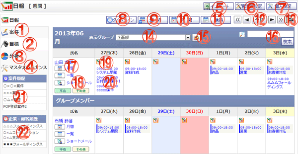

日報を週間単位で参照する画面です。

機能説明
案件 リンク案件一覧画面へ遷移します。 |
目標 リンク目標設定画面へ遷移します。 |
|---|---|
分析 リンク分析画面へ遷移します。 |
マスタメンテナンス リンクマスタメンテナンス一覧画面へ遷移します。 |
インポートボタン日報インポート画面へ遷移します。 |
管理者設定ボタン管理者設定メニュー画面へ遷移します。 |
個人設定ボタン個人設定メニュー画面へ遷移します。 |
タイムラインボタン日報 タイムライン画面へ遷移します。 |
週間ボタン日報 週間画面へ遷移します。 |
月間ボタン日報 月間画面へ遷移します。 |
検索ボタン日報検索画面へ遷移します。 |
前週・前日・今日・翌日・翌週移動ボタン現在表示している日付から、表示を切り替えます。
|
カレンダーボタンポップアップでカレンダー画面が開きます。 |
表示グループコンボ登録されているグループ・マイグループ（橙色）の一覧が表示されます。このコンボで選択されたグループに所属するユーザの情報が日報一覧に表示されます。 |
グループボタンポップアップでグループ選択画面が開きます。 |
検索ボタン検索ボタンをクリックすると、入力したキーワードを元に日報の検索を行い一覧画面へ遷移します。 |
ユーザ名リンクユーザ名リンクをクリックすると、詳細なユーザ情報をポップアップで表示します。 |
不在・在席・その他・ショートメール・月間・一覧アイコンボタン各種処理のショートカットボタンです。
|
日報新規登録ボタン日報登録画面へ遷移します。 |
日報タイトルリンク登録されている日報のタイトルが表示されます。クリックすると日報編集画面へ遷移します。 |
案件履歴過去三か月間の案件の履歴が10件まで表示されます。 |
企業・顧客履歴過去三か月間の企業・顧客の履歴が10件まで表示されます。 |
表示・入力項目説明
検索キーワード
検索するキーワードを入力します。